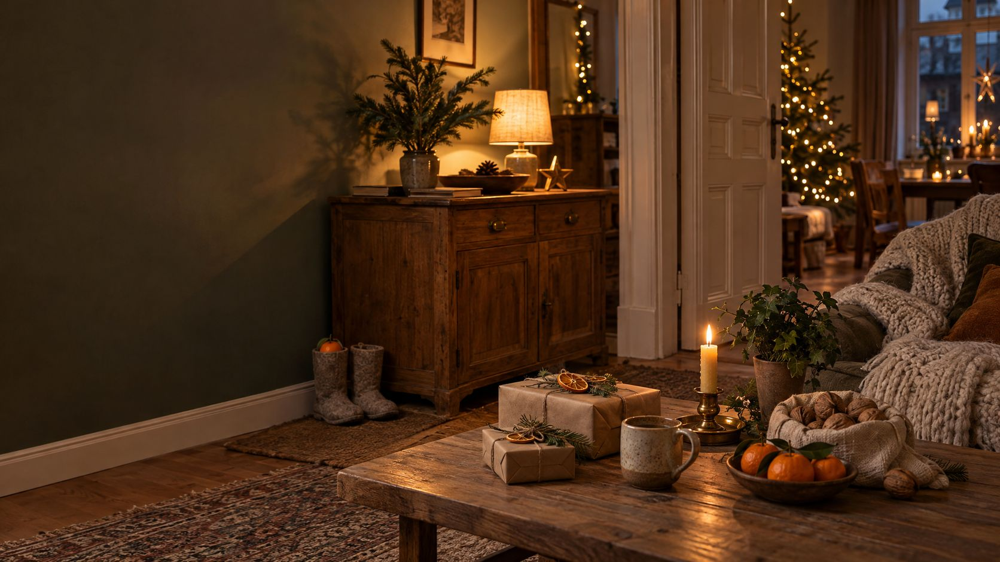

Geschenke fürs Zuhause
Kleine Ideen für Nikolaus und Weihnachten, die nicht im Schrank verschwinden. Nach Budget sortiert, schön verpackt und ohne Stress beim Umtausch.
Gute Geschenke fürs Zuhause werden täglich benutzt: Kerze, Decke, Tasse, Pflanze oder ein schönes Licht. Nikolaus ist am 6. Dezember, die Stiefel stehen am Abend davor vor der Tür. Ein Umtausch im Laden ist nur Kulanz, online gekaufte Geschenke lassen sich meist 14 Tage widerrufen, Gutscheine gelten in der Regel drei Jahre.
Was ein gutes Geschenk fürs Zuhause ausmacht.
Drei Fragen, bevor du kaufst.
Wird es benutzt?
Eine Tasse, eine Decke oder eine Kerze kommt jeden Tag in die Hand. Reine Deko-Figuren landen schnell im Regal oder im Keller.
Passt es zum Stil?
Schau dich bei der Person um: viel Holz und Weiß, eher dunkel und warm, bunt gemischt? Unter Wohnstile findest du die passenden Farben und Materialien.
Ist es klein genug?
Gerade in kleinen Wohnungen ist Platz knapp. Lieber etwas, das sich verbraucht (Kerze, Tee, Pflanze) oder etwas Vorhandenes ersetzt.
Ideen nach Budget.
Für Nikolaus reicht oft die erste Spalte.
- Bienenwachs- oder Stumpenkerze
- Schöne Streichhölzer
- Kleine Pflanze im Topf
- Leinen-Geschirrtuch
- Handgemachte Keramiktasse
- Kerzenhalter aus Messing
- Duftkerze mit Holzdocht
- Kleine Vase mit Trockenblumen
- Wolldecke oder Plaid
- Akku-Tischleuchte mit warmem Licht
- Bilderrahmen mit eigenem Foto
- Kuschelige Hausschuhe
Für eine Lampe gilt: warmweiß um 2.700 Kelvin wirkt gemütlich. Mehr dazu unter Licht planen.
Stiefel füllen zu Nikolaus.
Nikolaus ist am 6. Dezember. Die geputzten Stiefel stehen am Abend davor vor der Tür.
Der Brauch geht auf den heiligen Nikolaus zurück, Bischof von Myra in der heutigen Türkei. Er soll armen Mädchen heimlich Gold durchs Fenster geworfen haben. Daraus wurde das Füllen der Schuhe über Nacht.
Das Klassische
Nüsse, Mandarinen und etwas Süßes. Das passt in jeden Stiefel und sieht schön aus.
Eine Kleinigkeit dazu
Eine Kerze, eine kleine Tasse oder ein Paar Wollsocken. Für Erwachsene gern etwas fürs Zuhause.
Kein Stiefel? Ein Säckchen.
Ein Leinenbeutel an der Türklinke funktioniert genauso und lässt sich jedes Jahr wieder benutzen.
Schön verpacken ohne Plastik.
Packpapier und Kordel
Braunes Papier mit Jute- oder Baumwollkordel wirkt ruhig und passt zu jedem Stil.
Grün und Natur dazu
Ein Tannenzweig, Eukalyptus oder eine getrocknete Orangenscheibe statt Plastikschleife. Die Ideen aus Weihnachtlich dekorieren funktionieren auch hier.
Stoff statt Papier
Ein Geschirrtuch oder Schal als Verpackung ist gleich ein zweites Geschenk.
Wenn es nicht gefällt.
Was beim Umtausch gilt, laut Verbraucherzentrale.
- Im Laden gekauft: Es gibt kein gesetzliches Recht, nur weil es nicht gefällt. Umtausch ist Kulanz des Händlers. Frag beim Kauf nach und lass es dir auf den Bon schreiben.
- Online gekauft: Fast alle Käufe lassen sich innerhalb von 14 Tagen widerrufen. Früh gekauft kann die Frist an Weihnachten schon vorbei sein.
- Kaputt: Bei Neuware hast du zwei Jahre Ansprüche gegen den Händler, im ersten Jahr muss er beweisen, dass die Ware in Ordnung war.
- Gutschein: Ohne andere Vereinbarung gilt er in der Regel drei Jahre.
Rund um Black Friday lohnt sich Vergleichen, aber achte auf die Widerrufsfrist.
Checkliste.
Hak ab, was erledigt ist. Der Stand bleibt nur in deinem Browser.
Kleine Geschenke fürs Zuhause.
Ideen zum Stöbern. Die Links führen zu einer Suche bei AmazonAnzeige
Häufige Fragen.
Wann ist Nikolaus 2026?
Am Sonntag, 6. Dezember 2026. Die Stiefel stellt man am Samstagabend, dem 5. Dezember, vor die Tür.
Was kommt traditionell in den Nikolausstiefel?
Nüsse, Mandarinen und Süßes. Dazu passt eine kleine Kleinigkeit wie eine Kerze oder Wollsocken.
Kann ich ein Geschenk im Laden umtauschen?
Nur aus Kulanz. Ein gesetzliches Recht gibt es nicht, wenn die Ware in Ordnung ist. Online gekaufte Geschenke kannst du meist 14 Tage widerrufen.
Wie lange gilt ein Gutschein?
Wenn nichts anderes vereinbart ist, in der Regel drei Jahre.
Was schenke ich jemandem mit wenig Platz?
Etwas, das sich verbraucht oder täglich benutzt wird: Kerzen, Tee, eine Pflanze, eine Tasse oder eine Decke. Ideen für kleine Wohnungen stehen unter Kleine Räume.
Quellen.
Alle 2 Quellen anzeigen
- Verbraucherzentrale: Geschenke umtauschen – das sind Ihre Rechte (22.12.2025) verbraucherzentrale.de
- Apotheken Umschau: 6. Dezember – Warum kommt der Nikolaus? (01.12.2016) apotheken-umschau.de
Geprüft am 08.11.2026. Keine Rechtsberatung.